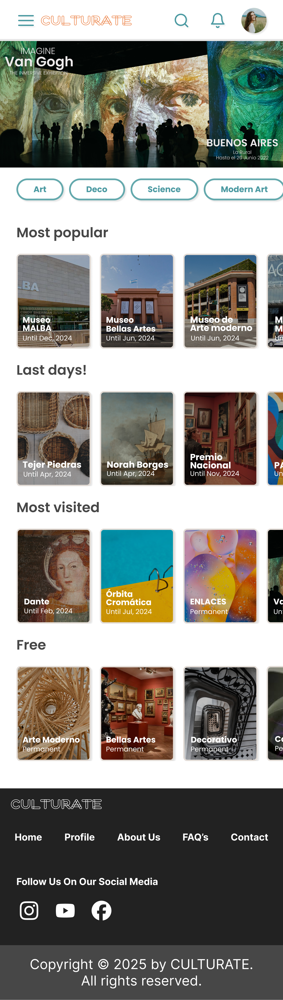
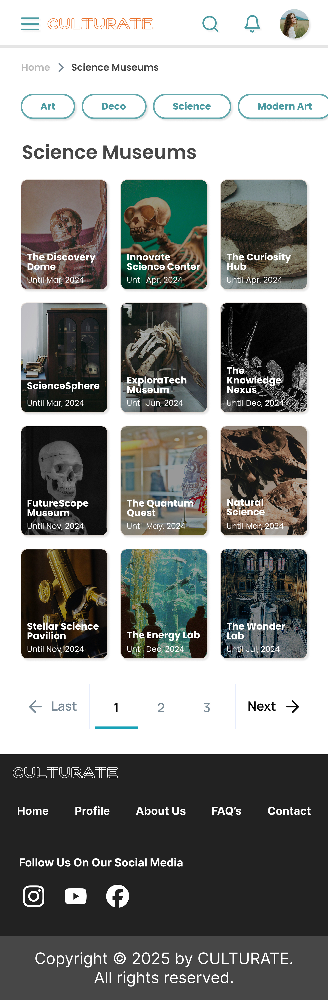
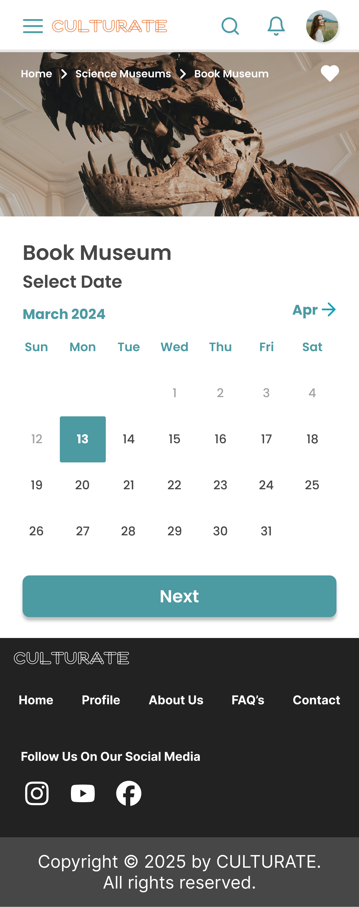
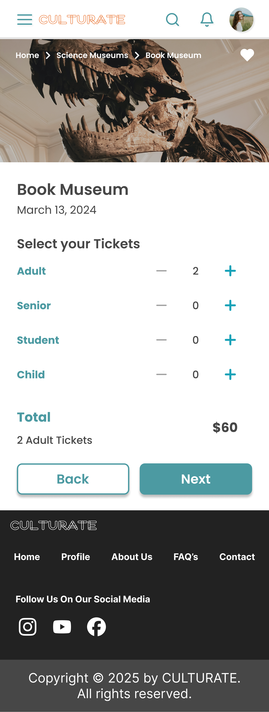
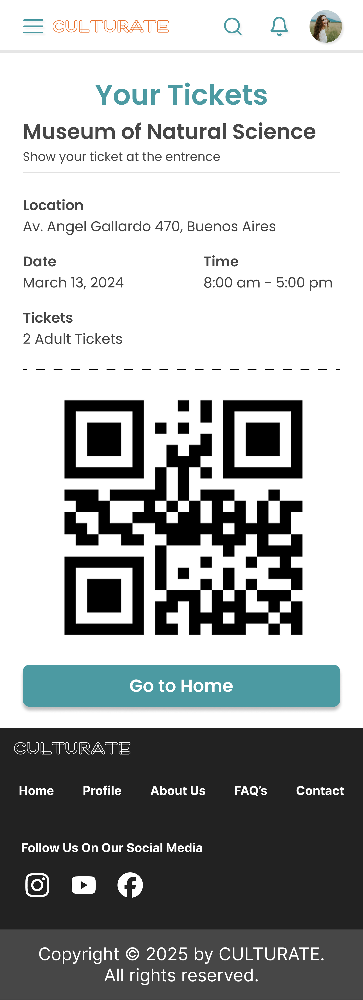

The project that taught me how UX actually gets made
CULTURATE was my first project as a UX/UI designer, working remotely with a cross functional team based in Argentina.
I came into this still early in the field, with the instincts but not yet the scar tissue of having shipped something with a real team. What I left with was a much clearer sense of how research, ideation, and design actually move through a group rather than through one person's head, how decisions get proposed, challenged, tested, and revised when five different roles all have a stake in the outcome.
It's also the project where I first learned that the most valuable design decisions are often about removing things, not adding them, a lesson that's shown up in every project I've worked on since.
Exploring culture in a big city shouldn't require an account
Exploring cultural activities in a large city like Buenos Aires can be genuinely difficult. Information about museums is scattered across different sources. Users struggle to find options that match their interests or location. Existing platforms often require account creation or payment before someone can even explore. The lack of centralized, user friendly tools reduces engagement before it has a chance to start.
One voice in a five person team
I worked as a UX/UI Designer collaborating within a cross functional team, contributing to user research, ideation, and design decisions, not owning the product alone, but learning to hold a point of view inside a group that had to align on every call.
-
—
Created wireframes and interactive prototypes in Figma. From low fidelity through high fidelity, in step with the rest of the team's research and validation work.
-
—
Participated in usability testing and iterative improvements. Sat in on sessions, took findings back into the work, and revised flows based on what users actually did, not just what they said.
-
—
Collaborated using Notion to track tasks and ensure alignment. Working asynchronously across a remote team meant decisions had to be visible and traceable, not just discussed once and forgotten.
A user centered process, end to end
The team followed a user centered design process focused on reducing friction and improving accessibility.
- Defined requirements and aligned on product goals as a team.
- Conducted user research to understand behaviors and expectations around cultural discovery.
- Created personas and user journeys to identify where the real pain points were.
- Developed low, mid, and high fidelity prototypes, building up fidelity deliberately rather than jumping straight to polish.
- Conducted usability testing at each stage to validate decisions before moving forward.
Removing barriers was the strategy, not a single feature
-
—
Removed mandatory onboarding. Users can explore the platform immediately, with no account wall between them and the content they came for.
-
—
Delayed monetization. Ticket purchases were pushed later in the flow to reduce friction and build user trust before asking for anything in return.
-
—
Designed multiple discovery paths. Search, filters, category navigation, and a location-based map, because people don't all arrive at "what should I do today" the same way.
-
—
Integrated geolocation. Surfaced nearby museums automatically to improve relevance without requiring the user to type anything.
-
—
Included reviews and comments. Gave users social proof to support their decision making, the same way they'd evaluate any other outing.
Every key decision on this project removed a barrier, an account, a payment, a single rigid path to discovery. None of them added a feature for its own sake.
A platform that scales with how invested a user already is
The final product enables users to discover museums through multiple intuitive pathways, explore options based on location, interests, and categories, view detailed information and user feedback, save favorite museums and manage tickets as registered users, and move through the experience without unnecessary barriers.
The platform balances accessibility for new users with additional functionality for returning users, nobody has to commit before they're ready, but the product has more to offer once they are.
Tested at every fidelity, not just at the end
Usability testing was conducted across all stages of the design process, low, mid, and high fidelity prototypes were each tested with multiple users. That cadence let the team identify usability issues and friction points early, while they were still cheap to fix, and iterate designs based on real user feedback rather than internal assumptions.
The final high fidelity prototype was validated with users, resulting in a more intuitive and effective experience than the early concepts had produced.
-
—
Reduced barriers to entry by eliminating mandatory onboarding entirely.
-
—
Improved discoverability through multiple navigation paths instead of one rigid funnel.
-
—
Increased usability through continuous testing and iteration at every fidelity stage.
-
—
Created a flexible platform that supports both casual exploration and eventual conversion.
Collaboration and validation, learned firsthand
This project reinforced the value of collaboration and continuous validation. Working within a multidisciplinary team required clear communication, alignment, and shared ownership of decisions, nothing shipped because one person decided it should.
Iterative testing played a key role in refining the experience and ensuring the final solution addressed real user needs. As a first project, it set the standard I've tried to hold myself to since: research before assumptions, testing before certainty, and removing friction before adding features.
Selected screens







